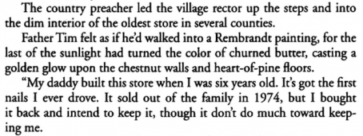

.png)
.PNG)
.PNG)
.PNG)
.PNG)
.PNG)
.JPG)
.JPG)
.PNG)
.PNG)


When I read a book, my mental images often come from places I have been or seen pictured elsewhere. Â It is probably the same for most people. Â Much of what I picture when reading Jan Karon’s Mitford books does come from places I have seen in Blowing Rock, North Carolina, but there is another North Carolina mountain town that plays heavily in my imagination when reading the series: Â Valle Crucis.
When we encounter the character of Absalom Greer in At Home in Mitford, Â we learn that he is an old preacher who runs a general store and lives in back of it with his sister, Lottie. Â Absalom is the one person the main character, Father Tim, often visits for refreshing his soul. Â Read these lines from the book, and see what you picture in your mind.

Do you picture anything like these images?vallecrucis.com
This is the Mast General Store in Valle Crucis. Â Fictional Absalom Greer’s general store is 12 miles from Mitford in the book. Â In real life, the Mast General Store is located in Valle Crucis, about 15 miles from Jan Karon’s old home in Blowing Rock. Â Having visited the store long before I read any of the books, this is what I pictured when I read about Absalom Greer.
The store was built by Henry Taylor in 1883 and called The Taylor Store back then. Â In 1897 W.W. Mast bought a half interest in it, and the store was then renamed Taylor and Mast General Store. Â In 1913, Mr. Mast purchased the other half interest, and it became known as the current Mast General Store. Â It sold again in 1973 and closed in 1977. Â Finally, John and Faye Cooper bought the old store and reopened it in 1980. Â It still carries some of practically everything. Â There are feed and seed supplies, shoes, candies, jams and jellies, and even an operating post office in the general store. Â It is listed on the National Register of Historic Places, and there is an interesting video about it here.
If the Mast General Store in Valle Crucis is my imagination’s store for Absalom Greer, then surely this is one of the three churches that his character serves. Â Isn’t this little chapel beautiful?
This is St. John’s Episcopal Church also in Valle Crucis. Â The interior is simple, rustic, and gorgeous.

And finally, I love the fictional Meadowgate Farm in the books.  It is supposedly 10 miles outside of Mitford.  Valle Crucis again provides me with another mental image – the Mast Farm Inn, an award winning bed and breakfast inn.
It even has a barn like the one I imagine for Meadowgate Farm. horsecountrychic.blogspot.com
horsecountrychic.blogspot.com
I would be quite happy to stay in any of its rooms or cottages. themastfarminn.com
themastfarminn.com
The inn is also listed on the National Register of Historic Places, and the food is award winning. Â How about their Sunday brunch and nap special? Â Sounds perfect to me (and something Father Tim would love at Meadowgate Farm.)
I’ve not read anywhere that Jan Karon was inspired by the little mountain town of Valle Crucis, but it certainly feeds my imagination when reading her books. Â The Mast Farm Inn will be releasing a set of four cookbooks this spring. Â You can read a little about it here.
Don’t forget the wonderful Mitford cookbook is included in the giveaway here. Â Just leave a comment on any of the Loving Mitford posts and you are entered in the drawing.
Since we are ending our visit here today with food in our conversation, I will leave you with a foodie question:
What is your favorite dish to prepare for family or guests?
I know your answers are going to make me hungry! 🙂
 ***Giveaway has closed.  Winner was announced 2/7/13.***


.PNG)
Such beautiful photos of what I imagine Mitford and surrounding area looks like. Thank you for sharing them. They make me long to visit with Father Tim and Cynthia again.
———————————————————–
So glad you enjoyed them, Gaye. Hang on until September. Then we can visit with Father Tim in the new book!
Kelly
Long before Jan Karon’s grand, brave adventure into the Mitford books began, I was blessed to visit the Mast General Store, in the tow of some dear friends from the Charlotte area. They owned a lovely cabin in the hills of Blowing Rock at the time, and we’d traveled across country to have a visit. If I could live anywhere else in the world, it would be Blowing Rock, NC. My momma was born in Kansas (to me, the near South); my dad and me are native Oregonians…but I do believe I lean toward the southern side of the family. Why, you may ask? Because the dearest side dish I could eat is grits. 🙂
Thank you so much for the lovely visit, and the sweet reminder of some of my favorite memories. 🙂
————————————————————-
Your trip sounds wonderful, and I would love to live in Blowing Rock, too. Isn’t it just the most precious town?! Oh I love grits as well! 🙂 Cook them with whipping cream, and add some butter…yum! I am glad you enjoyed the post. It was a fun one to write.
Kelly
I love visiting these gorgeous towns through your posts!! I so hope to go in person someday.
My go to dish is apricot pork roast. It is so easy in addition to being delicious! Served over rice the first day/night I make it. Then slice leftover roast for 2nd night and make hoagies with spicey mustard & swiss or mozzarella cheese, wrap in foil & heat for 12 minutes. Everyone I’ve served it to has loved it and asked for the recipe. Even my teenage daughter’s friends!
BEAUTIFUL!!!
I’ve never been to Valle Crucis, but it sounds like a lovely place to visit.
I don’t really have a favorite dish to prepare, but I do have a favorite dessert. I love to make Apple Dumplings. I use The Pioneer Woman’s recipe and everyone loves them!
I have a great salmon recipe that my family loves. Love your Mitford series…
Beatiful church. My meal would have to be Chicken Marsala.
Twenty five years ago I was teaching with a young lady from the High Country. She told me that I warmed her heart and that I reminded her of her home in North Carolina. That winter, my husband a toddler took a trip to Valle Crucis. The moment we drove onto Broadstone Road I knew that I would never be the same. I felt as if I was finally home. We returned home to Florida where I was born and raised, but since that winter trip, we have returned every single year, never missing one. Finally, we bought a cottage twelve years ago,and we spend every winter break, fall break, spring break, and summer there. I will retire soon, my husband already has retired and we are dreaming of building our retirement home right down the street from where the Blue Heaven house is. I will go buy the book and I can tell you already that I will be seeing Valle Crucis on every page.
I LOVE Valle Crucis! It is one of my favorite places, just the drive into the valley is worth the trip. Beautiful, love your pictures. Thanks for sharing on this cold day.
My family loves “Sunday Chicken” It’s cooked in the crock pot served over rice. Beautiful bed and breakfast. I think I read about it in Victoria magazine.
I really enjoyed these posts. Beautiful photos. My go to meal is always a Perfect Roast Chicken. The recipe is from The Barefoot Contessa. Everyone loves it and sooo simple to make.
What a fun post. The video on the Mast General was great. I didn’t know the history. They’ve expanded since that video, because we now have a Mast General in downtown Knoxville. It’s been here about 5 years. It’s like a huge Cracker Barrel without the restaurant. It’s not quite as authentic as the original, but it’s a fun place. I don’t know how many others they have now, but it’s the same company because I noticed the logo was the same. That’s exactly how I imagine Preacher Greer’s store, except with some trees around it. Surely she had that in mind when she was writing the book. I don’t know how she couldn’t.
How about that church?!? Wow! I could just sit in there and meditate. We have some like that in Cades Cove. Have you been there? When you have some time, you should check that out. It’s a beautiful place with an interesting history. If you ever get to come to Blackberry Farm that would be a good day trip. It’s not far.
Kelly,
The pictures are so neat! The country store is my favorite! I will be cooking Country Club Chicken! Yum!
Kelly, Can I tell you that I am loving this series on Jan Karon. I hadn’t heard of this series before now and I am in hot pursuit of the first book…….can’t wait!! I love the places that books take us. Have you always visited Bed and Breakfasts? Our family has moved from coast to coast and in between and all the traveling we do…….I have NEVER stayed in a B&B. Do you always look for an Inn when you travel?
My go to dish is Chicken Almondine topped with crushed Ritz my kiddos LOVE it and it always goes over well with guests.
Beautiful pictures! Thank you for sharing. I guess my favorite meal to cook is cube steak and gravy with mashed potatoes. My husband loves most anything and is so easy to cook for. I am so lucky!
Kelly, you must be an amazing language arts teacher. You are so good at explaining the way you create your visual images and connect to the text. I am sure you model for your students the same way. It makes your writing style is so personal – like you are sitting across from us. I love to prepare appetizers. I make a baked bean dip that is a favorite for my family and friends. I even love the leftovers for breakfast! My youngest daughter would request it when she came home from college. The best family and friend memories are often associated with food. Thanks for another lovely post.
Those places could be in many books I have read. If you read chapter books to your third graders, a suggestion is…. Summer of the Monkeys. It is such a sweet story that I always cried when I read it to my class. (Takes a long time to read it to a class but they love it.) The Mast General store above looks like how I imagined the store in Summer of the Monkeys.
I like to prepare chicken divan for my family because it can be made with roasted chicken bought already cooked…as a time-saver.
Since you asked here are two of my family meal favorites;first is a Balsamic-Glazed Pork Tenderloin,with Mashed Potatoes & Roasted Root Vegtables, second is Chicken,Mushroom Florentine Crepes with Mornay Sauce. Neither of which are low calorie, so best reserved for special occasions… Yet none the less yummy indeed!!!
I need a map to the bucolic hamlet,Valle Crucis,NC as soon as possiable! Thank you for the introduction.
Kelly, I think we could take a road trip together! Blowing Rock and Valle Crucis are two of my favorites! And I can’t pass a Mast General Store without stopping and finding something I need/want … even if it’s just a bag of their old-fashinioned candy.
I think my favorite thing to make for family is soup … of any kind. We have so few days of good “soup weather” in Texas, it’s always a treat to make and enjoy.
Thanks for another beautiful post! I’d love to be standing by that huge wood stove in Mast General right now!
Kelly,
What fun to see images of places that do look as I imagined the places in the Mitford series books would have looked. You did a great job with this.
There is a grilled chicken recipe that I love to fix for friends and family.
Karen
What wonderful images you’ve shared today. I don’t believe that I use places I’ve seen when reading and trying to visualize a place described in a book. My mind just conjures up an image for me. Interesting to think about. Since I live in a totally rural area most of our towns have old stores like you’ve shown but most are updated at least into the late 40’s or 50’s and there they remain in their own little time warps. It’s interesting also that in most of the defunct towns around here it is the grocery that has survived the years more than any other buildings. We have one such town (Meadville) which has one remaining home (though vacant) and the grocery which now serves as general store, restaurant and local watering hole. Love going there for supper! It has fabulous scenic views as it sits in the bend of a large river and has towering canyon walls on the opposite side. Plus, the food is great 😉
I don’t really have a favorite meal that I prepare. My children seem to already have their own ideas of what I should cook while they’re visiting so I just cook what they love.
What a beautiful place to visit! I would love to stay in one of the rooms and just read a book all day long! How much fun would that be? My favorite meal to fix my family is usually turkey and all the fixings because all my children and grandchildren will be there which, of course, is the best part of the meal!!!
The Mast General Store – amazing! Those old historic places are so nostalgic and even mystical. Great pics Kelly – I love being an armchair tourist to these charming destinations!
What a wonderful job you’ve done in sharing your love of the Mitford series, I’ve found all the pictures so interesting! Now I have one more place I “must” visit!
I don’t know of a favorite meal I make, but I have made Esters Orange Marmalade cake from the book!
My favorite meal, that is a tough question as there are many favorites….but my family loves when I do a huge platter of spagetti and meat balls with a crisp tossed salad, and of course buttery garlic bread. You see when I use the stewed tomatoes that I put up in the fall, well they can always tell. I make sure the cookie jar is filled with my toll house chocolate chip cookies for the kids and for dessert I make an apple pie, warmed with a scoop of ice cream.
I have never read Jan Karon and after your post this week I am off to get one of her books. I look forward to starting it this weekend. I two other books going right now.
Have a great weekend!
Hugs,
Donna
Another great inn to add to my “Oh the places you’ll go” ….I love the way you present the “real life” to the fictional places of the book….
My go to dish for company?…Love making a pork roast with apples!!
Have a great weekend!
I love to make my pot roast with carrots, onions and brown gravy! I include my mashed potatoes with sour cream and cream cheese! It is a family favorite 🙂
LOVE this! Looks like another destination added to the bucket list! Thanks for sharing such beautiful images…
i’ve never heard of valle crucis but it sounds like a wonderful place. there is an old general store similar to the one you featured in a little town we pass through in mississippi on our way to vicksburg….seeing how we are going to vicksburg in 2 weeks i’m sure we’ll be stopping by. they have a “little of this and a little of that” and has been in the same family for many years.
on our last trip to vicksburg we left there and went to natchez and on our way found another old store that had a restaurant inside where we stopped and ate and browsed.
you can still find a few of these old general stores on backroads and small towns and i love that.
i really don’t have a favorite dish for family or friends….most of the time when we entertain it’s for family and it’s spaghetti or cooking out on the grill….not very exciting i know but always a hit with the grandbabies!